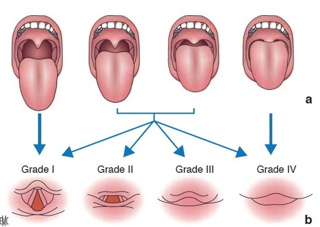

L’intubation endotrachéale est une technique d’abord invasive des voies aériennes, elle consiste à l’introduction d’une sonde d’intubation à travers l’orifice glottique. Son but est d’assurer la liberté des voies aériennes, de faciliter l’aspiration endotrachéale ainsi que de protéger les voies aériennes contre l’inhalation pulmonaire et de maintenir une oxygénation en rapport avec les besoins métaboliques grâce à une ventilation assistée en pression positive.
Le tube d’intubation peut être introduit par la bouche (intubation orotrachéale) ou par le nez (intubation nasotrachéale).
Elle peut être entreprise dans le cadre de l’urgence et constitue, dans des situations directement menaçantes pour le pronostic vital, un véritable sauvetage du patient.
Toutefois elle expose à des complications sévères (hypoxémie et la défaillance cardiovasculaire) qui peuvent êtres rencontrés à la fois dans les secteurs d’urgence et deréanimation et dans les intubations prévues (chirurgies prévues ou procédures invasives)
Le matériel utilisé pour l’intubation se compose du laryngoscope qui permet de visualiser le larynx et les structures adjacentes et de la sonde d’intubation qui est introduite dans la trachée et qui est utilisée comme voie de passage des mélanges gazeux vers le poumon et l’extérieur.
Un laryngoscope est composé d’un manche qui contient la source lumineuse et d’une lame courbe ou droite. Plusieurs types de manches sont commercialisés.
• Les manches étroits sont utilisés de préférence en pédiatrie et les manches courts chez les patients obèses ou avec une très forte poitrine.
• Lames du laryngoscope : Elles peuvent être courbes (lame de Macintosh) ou droites (Lame de Miller), de tailles 3 (la plus utilisée chez l’adulte) et 4, réutilisables ou à usage unique. À l’heure actuelle, il est recommandé de disposer d’une lame métallique de chaque taille pour faire face aux difficultés de laryngoscopie avec les lames à usage unique.
Les lames à fibres optiques offrent une meilleure intensité lumineuse.
Les sondes endotrachéales utilisées en anesthésie sont en polychlorure de vinyle (PVC) et à usage unique. Le matériau doit répondre à plusieurs critères :
o Être transparent afin de faciliter la surveillance des sécrétions bronchiques et la condensation des gaz expirés ;
o Avoir une surface interne et externe lisse et glissante, non mouillante, pour faciliter l’insertion de la sonde et limiter les frottements et l’adhésion des sécrétions ;
o Posséder une rigidité, une solidité et une thermolabilité suffisante pour empêcher plicature et compression et favoriser l’adaptation de la sonde à l’anatomie du patient.
La forme de la sonde est définie par les normes ASTM. Le rayon de courbure est compris entre 12 cm et 16 cm. L’extrémité distale est composée d’un biseau dont les caractéristiques sont :
o Angle aigu de 38° ± 8 avec l’axe longitudinal de la sonde.
o Ouverture vers la gauche de la sonde permettant une meilleure visualisation du larynx lors de l’intubation.
o Extrémité arrondie, sans aspérité ni angle aigu.
Les sondes à biseau peuvent être utilisées par voie nasale ou orale. Certaines sondes ont un orifice supplémentaire situé sur l’extrémité distale appelé « oeil de Murphy » pour permettre la ventilation en cas d’obstruction du biseau.
Le marquage doit comporter :
o Le diamètre interne de la sonde exprimé en millimètres.
o Le diamètre externe pour les sondes de taille inférieure ou égale à 6.
o Les mentions orale ou nasale ou orale/nasale.
o La distance par rapport à l’extrémité en centimètres.
o La mention IT ou F.19 ou Z.19 qui indique que les tests de toxicité cellulaire ont été passés.
o Un marqueur radio-opaque soit le long de la sonde, soit à l’extrémité distale.
Le ballonnet permet la ventilation en pression positive sans fuite et la protection de la trachée contre l’inhalation de liquide gastrique ou de sécrétions oropharyngées. Il permet de centrer la sonde dans la trachée.
La pression dans le ballonnet doit permettre d’assurer l’étanchéité de la sonde d’intubation et éviter une pression excessive sur la muqueuse trachéale.
La longueur de la sonde est fonction du diamètre interne. La plupart des sondes disponibles sont plus longues que nécessaire. Il est donc possible de les raccourcir pour diminuer la résistance à l’écoulement des gaz. La profondeur d’insertion de la sonde d’intubation recommandée chez l’adulte est de 21 cm chez la femme et de 23 cm chez l’homme (repère aux arcades dentaires) pour l’intubation orale. Pour l’intubation nasale, il faut rajouter 3 cm (repère à la narine).
Le choix de la taille doit être fait en fonction de plusieurs critères :
o Éviter la compression des muqueuses et des structures laryngées
o Engendrer le moins de résistance possible au flux ventilatoire
o Pouvoir ventiler sans fuite et sans devoir surgonfler le ballonnet.
En pratique chez la femme, il est recommandé d’utiliser une sonde de diamètre interne de 6,5 ou 7 mm et chez l’homme de diamètre interne de 7 ou 7,5 mm.
1. Guides. Un long mandrin souple de type bougie de MacIntosh est recommandé dans le plateau d’intubation standard. Il est indiqué lorsque la laryngoscopie est difficile. Son extrémité distale ne doit pas dépasser l’extrémité de la sonde. Le mandrin doit être retiré dès que la sonde endotrachéale pénètre dans le larynx pour éviter tout risque de traumatisme.
2. Pince de Magill. Elle permet de diriger la sonde endotrachéale dans le larynx ou une sonde nasogastrique dans l’œsophage.
3. Canules oropharyngées. La canule de Guedel est la plus utilisée. La taille doit être adaptée à la morphologie du patient.
o La protection des voies aériennes inférieures et du parenchyme pulmonaire contre le risque d’inhalation ;
o Le traitement de l’obstruction des voies aériennes supérieures ;
o Les aspirations trachéobronchiques chez des patients ne pouvant pas assurer le drainage correct de leur arbre trachéobronchique (sécrétions abondantes, toux inefficace) avec risque d’atélectasie ;
o La ventilation mécanique chez le patient en insuffisance respiratoire aiguë, ou en situation de détresse vitale.
o L’intubation est indiquée dans toute situation responsable d’un syndrome asphyxique ou d’un encombrement broncho-pulmonaire majeur.

Il n’existe pas de contre-indications à l’intubation chez un patient dont le pronostic vital dépend. Il est cependant recommandé de considérer l’abord trachéal d’emblée devant l’impossibilité de l’intubation.
Les principales complications sont :
o L’inhalation de liquide gastrique :
o Le spasme laryngé (au moment de l’intubation)
o L’arrêt cardiaque ou la bradycardie par anoxie
o L’intubation œsophagienne
o Les fractures dentaires
o L’effraction muqueuse
o Troubles du rythme cardiaque
Le but de cette préparation est d’anticiper le moindre problème pour éviter d’avoir à le résoudre dans la panique :
o Vérifier la dentition du patient (prothèse à enlever, dents sur pivots, dents instables).
o Parler au patient en expliquant au besoin certains gestes qui sont réalisés autour de lui avant l’induction.
L’intubation en urgence, en dehors de l’arrêt respiratoire et/ou circulatoire, laisse le plus souvent la possibilité d’un temps de préparation et d’évaluation de quelques minutes. Ce temps doit être mis à profit pour anticiper les difficultés techniques de l’intubation et pour limiter la survenue des complications.
L’intubation difficile prévisible doit être systématiquement recherchée avant toute intubation. Plusieurs scores prédictifs ont été développés et si leur réalisation peut être parfois difficilement réalisable en situation préhospitalière, des signes cliniques simples (Tableau 13) peuvent être recherchés, y compris dans des situations de détresse vitale.
| Critères | Valeur simplifiée |
| Antécédents d'intubation difficile | 10 |
| Pathologies favorisantes | 5 |
| Svmptômes respiratoires | 3 |
| OB-5cm ou subluxation = 0 | 0 |
| 3,5cm-OB =5cm et subluxation = 0 | 3 |
| OB = 3,5 cm et subluxation < o | 13 |
| Distance thyromentale< 6,5 cm | 4 |
| Mobilité de la tête et du cou s 100o | 0 |
| Mobilité de la tête et du cou 80 à 100s | 2 |
| Mobilité de la tête et du cours 80s | 5 |
| Classe de Mallampati 1 | 0 |
| Classe de Mallainpati 2 | 2 |
| Classe de Mallainpati 3 | 6 |
| Classe de Mallainpati 4 | 8 |
| Total maximum | 48 |
Un score supérieur à 11 a une sensibilité et une spécificité à 93 %, une valeur prédictive négative à 99 % et une valeur prédictive positive de 34 % pour prédire le risque d’intubation difficile.
L’optimisation de la préoxygénation avant la laryngoscopie va permettre d’augmenter les réserves en oxygène qui sont diminuées chez le patient hypoxémique. La préoxygénation classique fait appel à des cycles spontanés avec une FiO2 proche de 1, par plusieurs capacités vitales ou trois minutes de ventilation à volume courant. Chez le patient en détresse vitale, souvent hypoxémique, la préoxygénation en pression positive par ventilation non invasive (VNI) permet de diminuer la vitesse de désaturation lors de la laryngoscopie et permet de maintenir une hématose supérieure à celle obtenue après préoxygénation classique cinq minutes après l’intubation. Nous proposons systématiquement une préoxygénation en VNI qui en pratique utilise le masque facial d’anesthésie, présent dans chaque chambre de réanimation, maintenu par l’opérateur sur le visage du patient, à FiO2= 1 et à faible niveau de pressurisation (5 < AI < 15 cmH2O; PEP 5 cmH2O) permettant d’obtenir un volume courant expiré de 6 à 10ml/kg. La durée de la VNI en préoxygénation est celle nécessaire à la préparation des produits anesthésiques d’induction et d’entretien de la sédation et celle de la préparation du plateau d’intubation.
L’optimisation de l’état hémodynamique par un remplissage vasculaire (250—500 ml de solutés) peut permettre de limiter les conséquences vasoplégiques et inotropes négatives des médicaments de l’anesthésie et ce même en l’absence d’hypotension préalable (en l’absence de contre-indications cardiaques).
Le choix du soluté dans cette indication n’a pas été évalué.
En présence d’une hypotension et/ou de l’absence de réponse au remplissage vasculaire, il ne faudra pas retarder l’introduction d’amine vasoconstrictrice avant l’intubation, ce d’autant qu’il existe une tension artérielle diastolique basse (< 35 mmHg).
Le monitorage de base est :
• Clinique ;
• Cardiaque avec un oscilloscope ;
• De la pression artérielle ;
• De la saturation : oxymétrie pulsatile ;
• De la capnographie ;
• Des gaz (O2, NO2, agents halogénés) ;
• De la température surtout chez les enfants.
Ce matériel doit être en permanence et régulièrement vérifié, l’intubation trachéale étant souvent réalisée en urgences.
Le plateau d’intubation comprend :
o Une sonde d’intubation a ballonnet et son raccord, un jeu de sondes de tailles supérieure et inférieure doit être à portée de la main.
o Un laryngoscope muni d’une lame adaptée au malade :
o Il est monté et vérifié ;
o Des piles et ampoules de rechange sont à portée de main.
o Une pince de Magill
o Un ouvre-bouche à crémaillère.
o Une canule de Guédel
o Une seringue de 10 ml.
o Une pince de Kocher pour clamper de tuyau d’alimentation du ballonnet.
o Un stéthoscope.
o Un spray de Xylocaïne.
o Un lien de fixation ou du sparadrap.
o Un lubrifiant pour sonde : aérosol siliconé de préférence au gel.
Par ailleurs, on assure la présence :
o D’une source de vide avec nécessaire d’aspiration ;
o Des sondes d’aspiration trachéale ;
o D’un matériel de ventilation : insufflateur manuel, sa valve et son masque, et respirateur ;
o De quelques médicaments (Valium, atropine)
Tout patient des urgences/réanimation doit être considéré estomac plein ; par conséquent, pour limiter l’inhalation, une induction en séquence rapide (ISR) doit être réalisée dans la plupart des cas. L’ISR comporte un agent sédatif d’action rapide (agent sédatif) et un curare (agent paralytique) afin de créer des conditions d’intubation optimales et de limiter le risque d’inhalation.
L’étomidate, la kétamine et le propofol en cas de stabilité hémodynamique ont été retenus comme les agents hypnotiques de choix, car le plus souvent adaptés aux conditions d’intubation en réanimation. Cependant, le type d’agent hypnotique utiliser peut-êtrepréciser selon le patient et les circonstances nécessitant l’intubation.
- En cas de lésion neurologique
En cas de lésion cérébrale, c’est-à-dire chez le patient avec une PIC potentiellement élevée, une pression de perfusion cérébrale adéquate doit être maintenue pour prévenir des lésions cérébrales secondaires, donc éviter les élévations de PIC et maintenir une pression artérielle moyenne correcte. Pour ces raisons, l’étomidate ou la kétamine semblent être les agents d’induction de choix.
• Si le patient est hypertendu au moment de l’induction, l’étomidate est préférable car il n’élèvera pas davantage la pression artérielle.
• Chez les patients normotendus ou hypotendus, l’un ou l’autre agent peut être utilisé.
• Chez les patients sévèrement hypotendus, la kétamine est préférable.
En cas d’épilepsie, le thiopental ou le propofol semblent être les drogues de choix, toujours en réduisant les doses en cas d’hypotension.
- En cas de bronchospasme
En cas de bronchospasme chez les patients hémodynamiquement stables nécessitant l’intubation, la kétamine ou le propofol sont suggérés à cause de leurs propriétés bronchodilatatrices. Chez les patients hypotendus, la kétamine ou l’étomidate sont plus appropriés. Aucun de ces agents n’entraine de libération histaminique, au contraire du thiopental qui n’est donc pas recommandé pour cette raison.
- En cas de maladie cardiovasculaire
En cas de maladies cardiovasculaires, l’étomidate semble approprié. La stabilité hémodynamique et l’absence d’hypertension induite le rendent préférable d’autres sédatifs.
- En cas de choc
En cas de choc, la kétamine ou l’étomidate semblent être les drogues de choix. La kétamine entraine une stimulation sympathique qui pourrait augmenter les catécholamines endogènes. L’étomidate a, quant à lui, été incriminé pour sa suppression transitoire du cortisol endogène.
Les morphiniques ne sont habituellement pas recommandés dans l’intubation à séquence rapide, ils peuvent être discutés dans les intubations « programmées » en réanimation.
Deux curares sont disponibles pour l’ISR : la succinylcholine, un curare dépolarisant de courte durée d’action, et le rocuronium, un curare non dépolarisant de longue durée d’action (combiné au sugammadex, son antidote, pour décurarisation rapide si besoin). Il existe une nette supériorité de la succinylcholine concernant les conditions d’intubation. Le rocuronium, associé à son antidote (le sugammadex, en cas d’intubation impossible ou d’allergie), semble donc devoir être préférentiellement utilisé en cas de contre-indication à la célocurine (hyperkaliémie ou situation à risque d’hyperkaliémie comme acidose sévère, maladie neuromusculaire aigue ou chronique, patient brûlé depuis plus de 48 heures et traumatisme médullaire, antécédent d’hyperthermie maligne, déficit en pseudo cholinestérases, allergie).
La flexion du cou sur le thorax associé à l’extension de l’articulation atlanto-occipitale est classiquement recommandée pour faciliter l’exposition du larynx lors de l’intubation. Cette position est connue en France sous le nom de « position amendée de Jackson » ou sniffing position. Elle est généralement obtenue par l’insertion d’un coussin sous l’occiput, la tête étant placée en légère extension. L’utilisation d’un coussin n’est recommandée en première intention que chez l’obèse ou les patients présentant une limitation d’amplitude du rachis cervical.
L’intubation endotrachéale sous laryngosçcopie directe par voie orale est la méthode d’intubation de référence en anesthésie. C’est la technique la plus facile, la plus rapide et la plus fréquemment employée
• L’opérateur se tient debout derrière la tête du malade.
• Le laryngoscope est ouvert, saisi par le manche, de la main gauche
• La bouche est largement ouverte avec les doigts, voire à l’aide de l’ouvre bouche si nécessaire.
• La lame du laryngoscope est introduite le long de la commissure labiale gauche, tandis que les doigts de la main droite écartent les lèvres pour éviter qu’elles ne soient coincées entre la lame et l’arcade dentaire.
• La lame refoule la langue vers la gauche et est enfoncée progressivement jusqu’à ce que l’épiglotte soit visible. Cette progression du laryngoscope doit être faite avec douceur, posément, même en urgence.
• L’opérateur introduit l’extrémité de la lame sans le sillon glosso-epiglottique, puis il exerce une traction vers le haut dans l’axe du manche.
• L’orifice glottique est alors généralement visible. L’opérateur doit parfois aspirer le pharynx pour voir les cordes vocales. Si l’urgence le permet et si le malade n’est pas totalement inconscient, il pratique une pulvérisation d’anesthésique local sur l’épiglotte et les cordes vocales avant d’introduire la sonde.
• L’opérateur introduit la sonde d’intubation, concavité vers la droite. Lorsque l’extrémité en biseau de la sonde a franchi en douceur, sans jamais forcer, les cordes vocales, il réoriente sa concavité vers le haut. L’extrémité supérieure du ballonnet doit disparaitre au-dessous des cordes vocales.
• Le ballonnet est gonflé de la quantité d’air juste nécessaire pour empêcher les gaz de passer entre la trachée et la sonde.
• Le laryngoscope est retiré et remplace par une canule de Guédel.
• La sonde est maintenue d’une main tandis qu’elle est raccordée au ballon d’insufflation.
• On vérifie ensuite la bonne position ainsi obtenue (décrite dans la période post intubation).
• La sonde est alors fixée solidement, soit par une cravate de sparadrap collée sur le maxillaire supérieur soit par un lien de coton noué sur la sonde puis autour du cou.
Le choix de la narine s’effectue par l’inspection clinique et en demandant au patient de préciser celle qui offre le moins de résistance respiratoire. L’emploi de vasoconstricteurs, utilisés un quart d’heure avant le geste, permet d’augmenter la taille des fosses nasales et de diminuer le risque de saignement.
Une sonde souple est choisie, de diamètre interne 6,5– 7 mm pour les femmes et de 7,0– 7,5 mm pour les hommes.
Les indications correspondent essentiellement à la chirurgie orale, de la mandibule, à l’immobilisation des arcades dentaires ainsi qu’à l’ouverture de bouche impossible.
• La capnographie permet de vérifier la position endotrachéale de la sonde d’intubation. Alors que son utilisation est systématique au bloc opératoire et recommandée en préhospitalier, elle est peu fréquente en réanimation.
L’auscultation pulmonaire (vérification de l’égalité de l’intensité des murmures vésiculaires des deux champ pulmonaires) et gastrique, la présence de buée dans la sonde d’intubation ou la technique d’aspiration avec une seringue de 50 ml à gros embout permettent la confirmation de la bonne position de la sonde mais le délai de confirmation est plus long. La confirmation de la position de la sonde par une courbe de capnographie ou le virement de couleur d’un capnomètre jetable permet de raccourcir le délai de réintubation et de diminuer le risque de survenue d’hypoxémie et semble indispensable à la fois en préhospitalier mais aussi pour les intubations réalisées à l’hôpital.
• Noradrénaline si la pression artérielle diastolique reste inférieure à 35 mm Hg
• Initiation de la ventilation protectrice. : volume courant 6-8 mL.kg–1, PEP < 5 cm H2O et fréquence respiratoire entre 10 et 20 cycles.min–1, FiO2 100 % pour une pression de plateau< 30 cm H2O
• Manoeuvre de recrutement : PEP de 40 cm H2O pendant 40 secondes, FiO2 100 % (en l’absence de collapsus cardiovasculaire)
• La vérification de la pression du ballonnet qui ne doit pas dépasser 30 cm d’eau, pour éviter la survenue de lésions trachéales, doit être systématique dès la sonde fixée.
• L’entretien de la sédation doit être débuté dès la sonde fixée pour limiter le risque de réveil précoce et d’agitation source de complication potentiellement grave.
L’intubation oro- ou nasotrachéale modifie la physiologie ventilatoire. Un patient intubé nécessite une surveillance constante qui le fait confier aux réanimateurs, dans un secteur de soins intensifs. La mise en place d’une sonde d’intubation induit un dessèchement du mucus et une rétention des sécrétions bronchiques par manque d’humidification, de réchauffement et arrêt de l’activité ciliaire. La résistance du tissu à l’infection est modifiée ; à cela s’ajoute l’existence d’un matériel étranger, augmentant encore le risque infectieux. La mécanique respiratoire est elle-même perturbée : l’abolition du réflexe de toux augmente la stase des sécrétions bronchiques ; la perte de la pression positive expiratoire physiologique qui évite le collapsus alvéolaire aggrave une hypoxémie préexistante. Une surveillance constante est indispensable chez un patient, elle associe :
• Kinésithérapie (posture, clapping , aspirations) ;
• Aspirations stériles, brèves et atraumatiques ;
• Humidification et réchauffement des gaz ou air respirés ;
• Contrôle de la bonne position de la sonde qui doit être fixée ;
• Désinfection des cavités orales et nasales ;
• Position de léger proclive pour diminuer le risque de reflux gastro-œsophagien.